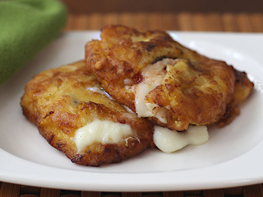

Aborrajados
Go to Aborrajados Recipe
Author: Patricia Stern
The ripe banana is a wonderful product! There are many ways to take advantage of it and as long as the peel (bark) is darker, its flavor will be sweeter and its consistency softer, this is the type of banana we will need for our recipe. The Aborrajados Bananas are one of the typical dishes of the cuisine of Valle del Cauca in Colombia, a very old recipe that has passed from generation to generation.
Time: 30 minutes - Difficulty: Medium - 488Kal
Ingredients
- 1 unit of Ripe Banana
- 50 g of Mozzarella cheese
- 2 tablespoons of Flour
- 1 unit of Egg
- 80 milliliters of Milk
- 1 pinch of Salt
- 1 pinch of Sugar
- 500 milliliters of oil
Steps
-
Peeling and cutting the banana
Peel and cut the banana into medium portions, fry in oil at medium temperature until golden.
-
Squash the Banana
Immediately crush the banana in the middle of a plastic bag to avoid sticking, arrange some cheese in the middle cut into thick strips and close the banana until you get a cylinder.
-
Prepare the batter
For batter, whir egg, milk, flour, a pinch of salt and sugar until homogeneous mixture.
-
Cover with the batter
Add the Aborrajado in the batter mixture until it is completely covered.
-
Start Frying
Immediately fry the cheese-filled banana in oil at medium temperature until golden brown, about 5 minutes. When ready, pass through absorbent paper to remove excess fat.
-
Serve the dish
It is time to serve the Colombian aborrajados, I recommend consuming them warm or hot to enjoy the crispy texture of the cover and melted cheese. You can accompany this preparation with a homemade lemonade.